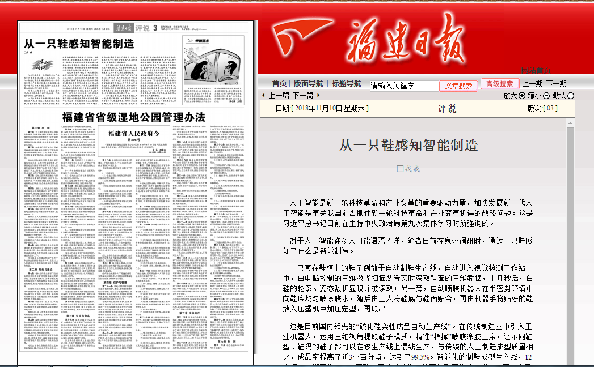

人工智能是新一轮科技革命和产业变革的重要驱动力量，加快发展新一代人工智能是事关我国能否抓住新一轮科技革命和产业变革机遇的战略问题。这是习近平总书记日前在主持中央政治局第九次集体学习时所强调的。
对于人工智能许多人可能语焉不详，笔者日前在泉州调研时，通过一只鞋感知了什么是智能制造。
一只套在鞋楦上的鞋子倒放于自动制鞋生产线，自动进入视觉检测工作站中，由电脑控制的三维激光扫描装置实时获取鞋面的三维数据，十几秒后，白鞋的轮廓、姿态数据显现并被读取；另一旁，自动喷胶机器人在半密封环境中向鞋底均匀喷涂胶水，随后由工人将鞋底与鞋面贴合，再由机器手将贴好的鞋放入压塑机中加压定型，再取出……
这是目前国内领先的“硫化鞋柔性成型自动生产线”。在传统制造业中引入工业机器人，运用三维视角提取鞋子模式，精准“指挥”喷胶涂胶工序，让不同鞋型、鞋码的鞋子都可以在该生产线上混线生产，与传统的人工制鞋成型质量相比，成品率提高了近3个百分点，达到了99.5%。智能化的制鞋成型生产线，12人值守一班可生产1500双鞋，而传统的生产线要达到同样的产量，需要65个工人。鞋厂投资一条智能生产线仅需15个月便可收回成本。不仅在经济效益上有所提升，生产环境也大为改变，和车间嘈杂、胶水味弥漫的传统生产线相比，这条智能生产线专门设计了喷胶尾气收集排放系统，使车间空气清新舒适。
众所周知，泉州是我省制造业重镇，工业产值超万亿元，产业集群优势明显。其中，鞋业是泉州九大集群产业之一。但泉州制造业“大而不强”已成为发展的瓶颈。
为推动泉州从“制造”向“智造”转变，2014年11月，泉州市政府与华中科技大学联手，合作共建了泉州华中科技大学智能制造研究院。以华中科技大学为发起单位，集聚国内外高校、科研院所和创新团队的科技创新资源，面向泉州市经济发展和全面实施智能装备产业的需求，打造国家级支撑与服务平台。
以问题为导向，把研究院办到生产一线；寻需求作对接，把成果转化基地搬到了家门口。难题在哪里，科研的方向就在哪里。这个平台打破身份、地域的界限，采用了全新的建设模式和运行机制，实现了源头创新到新技术、新产品、新市场快速转换，有效破除了科研成果与产业发展的“两张皮”问题，解决了成果转化“最后一公里”问题。这种生产线若能得到推广，将产生巨大经济效益。
一只鞋生产线的效益固然可喜，但智能制造的民间共识更令人鼓舞。2013年底泉州在全省率先实施“数控一代”示范工程，启动了智能制造探索，主要依靠的是政府推动；而2018年初成立泉州智能装备产业协会则是基于民间的共识，首批自愿加盟的会员企业有近百家，涵盖机械、电子、化工等多个行业。有共识才会聚集，有聚集才有共赢，企业家观念的转变让人看到希望。
智能制造一波方兴，新一代人工智能一波再起。勇立潮头，“惟改革者进，惟创新者强，惟改革创新者胜”。
（福建日报 2018年11月10日 评说3版
链接：http://gxt.fujian.gov.cn/xw/ztjj/rmzt/znzz/znzb/201811/t20181114_4606215.htm）
